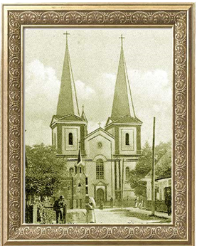

Костел Св. Анни
Невеликий дерев'яний костел поляки почали будувати в Тлумачі в середині XIV століття, як заволоділи Галичиною і стали селитися тут та одночасно в інших містах та селах краю. Місцеві урядовці, наділені королівськими повноваженнями, дбали, аби переселенці з Польщі мали тут свій вплив, допомагали будівничим і коштами, і матеріалами. То й не дивно, що в 1350-1355 роках Товмач уже мав свій костел, у 1370 році тут створено римо-католицьку парафію.  Однак, починаючи з XVI століття костел був знищений. Коментуючи події 1648 року, львівський історик Стефан Томашівський стверджує, що «товмацькі міщани, переслідуючи ксьондза Трускальовського, костел понищили, …а вікна, вівтар та амвону порубали». Впродовж десятиліття будівництво комтелу в місті навіть не розпочиналося. Тому, за королівським повелінням, справу передоручено станіславському намісникові Антонію Борзому. Йому вдалося зрушити справу з мертвого місця. Урядовець віднайшов кошти, зібрав бригади товмацьких поляків, спровадив до міста «звольних майстрів – теслярів» з-за Львова та Кракова і невдовзі, у 1716 році костел був уже збудований і овячений. У роки Другої світової війни, під час одного з бомбардувань, снарядом було пошкоджено храм. Треба було ремонтувати, але нова радянська влада, яка запанувала у Товмачі, виділяти кошти відмовлялася. Колишні військові, а їх булла більшість у виконкомі міськради, на одному зі своїх засідани прийняли рішення: «костел не підлягає реставрації та подальшому використанню. Його треба знести».